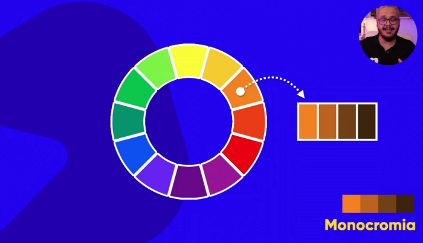
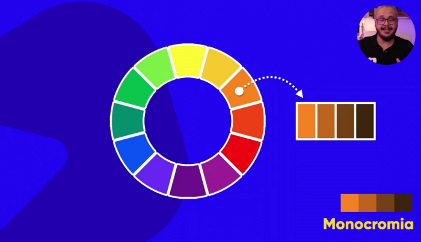

Monocromia
Trabalha com uma cor só, modificando apenas a saturação e o brilho, gerando até no máximo 5 cores (Número de cores indicadas para um projeto).
Trabalha com uma cor só, modificando apenas a saturação e o brilho, gerando até no máximo 5 cores (Número de cores indicadas para um projeto).
